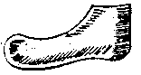
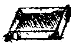

Glossary of Footwear Terminology, J-L
Jigger
A tool for setting and polishing stitches. [Devlin, 1840] There are three sorts of
Jiggers: full, midding, and light. [Rees, 1813] These are either Long Handled or
Short Handled.Jiggering
v. Using the jigger to set and polish the forepart stitching. It may be used with a bit of
soap or dissolved gum, or even heated with a candle to fill, smooth, and strengthen the
stitches. [Devlin, 1840] It should not be heated about "blood heat".
[Rees, 1813]
Joints
(also Ball of the foot)
The joints are the widest part of the foot, corresponding with the treadline in
the shoe sole.
Jumps
(see Lifts)Keepers
(Strap Keepers)
- Vertical incised slots, or loops made by straps threaded vertically through horizontal
slots in the upper to hold thongs or laces in position. [Goubitz, 2001]
Goubitz also refers to these as strap keepers
- Strap keepers - Small loops for holding buckle straps in
place, flat against the upper, after they have passed through the buckle
frame. [Goubitz, 2001]
- In the craft world of belt making, a Keeper is the little metal loop
thing the end of the belt goes after it goes through the buckle.
Kit
The shoemaker's tools. [Devlin, 1840] In the 19th century, the definition becomes
more specialized.
Knotted toggle
A fastening device made by a simple two-pass knot. [Goubitz, 2001]
Lace
A long strip of material, usually leather, that is threaded through pairs of holes along
either side of an opening, to draw the opening closed. [Thornton/Swann, 1983][Webber,
1989][Grew/deNeergaard, 1988]
Lace End
See Tag.Lace hole
See Eyelet [Thornton/Swann, 1983]
Lace-hole Reinforcement
(See Facing)Lacing
(Other Medieval spellings include: Laas, Lace, Laise Modern
terms include: Drawstring)
- Some times called a �shoe-lace�, or a �boot lace� is a long strip of braid,
cord, leather, line, ribbon, string, tape, etc. used to draw together and close
an opening, and in modern shoes to adjust the tightness of the fit. For this
work, lacing will refer to any sort of tie used to close footwear.
- Horizontal lacing characteristic of the conservative Oxford; crossover lacing is on
the Derby is more casual.
[http://www.curtin.edu.au/curtin/dept/physio/podiatry/shoeglos/content.html]
*Lacing holes
(Other Medieval spellings include: Oilet, Olyette. Modern terms
include: Eyelets, Lace hole, Tie Holes)
Holes stamped or cut into vamps, legs, quarters, latchets, tongues intended to
hold laces for tying shoes and boots. We have no term for what they called
these, and eyelets has too many connotations of metal eyelets, grommets and so
forth. Furthermore, lacing holes can be used to refer to any of the several
forms of holes and slits cut for lacings.Laid in
Rather than pulling hard on the Counter material during lasting, they are
merely laid in, or pulled into place and fastened with Lasting Tacks.
[Devlin, 1840]
Languides
Straps, the one tied with shoe ties, the latter with buckles. See Latchet and also Strap
[Holme, 1688]Lapped Seam (Overlapped Seam)
See Stabbed Seam.
ast
(Other Medieval spellings include L�ste, Leste, Latin: Calepodia,
Crepidam, Forma, Formes, Formipedia/um, Formula, Furmes)
- A wooden model that shoes and boots are made on. Their use has been a source of
some debate; when they were invented, what they were used for.
- (Obsolete) A footstep, track, trace. After Old English this only appears in the Scottish
phrase not a last: nothing, not at all.
- A stylized foot-shaped 3-dimensional form made on standard size measurements, on which
the leather for making shoes is stretched and shaped. While it corresponds roughly to the
foot shape, but with certain differences due to fashion and shoemaking requirements. The
Romans used flat foot shaped iron items, described traditionally as "lasts" but
these were anvils for turning over nail points and not apparently forms for shaping.
Before the 1960s, these were generally made from wood, now they are generally carved from
plastic. [Thornton/Swann, 1983] Note, that this term does not appear as a name in English
before about 1385. (See Appendix) [Martin, 1745]
- Several medieval lasts appear in the artwork with what appear to be wooden
fittings, probably wedges, and
are being used as display trees.


Holme's last. - In modern shoes, all shoes are constructed around a form called a last, which provides
the overall shape of the shoe. Lasts can be straight, semi-curved, or curved. The better a
shoe's last matches your anatomical footprint, the better the shoe is for you.
[www.eastbay.com/help/glossary]
- A block of wood roughly resembling a foot shape, upon which the shoe is made. [Goubitz,
2001]
- A wooden instrument used for making shoes. Its shape and dimensions represent the
customer's foot and the required type of shoe in abstract form [Vass]
- Asymmetric lasts: the two lasts are different, reflecting the left and right
feet; in use in ancient times and again from the beginning of the nineteenth century.
[Vass]
- Symmetric lasts: measurements of only one foot were taken and used for both lasts; in
use from the fifteenth century until the end of the eighteenth; customers always had
difficulty breaking in shoes made on them. [Vass]
- Custom-made lasts: produced using all the foot documentation and thus reflecting every
characteristic feature of the individual feet and the type of last. [Vass]
Last, Comb
A last with a flattened instep, designed to be used with Shovers,
Instep Leathers,
and Wedges.Last removal
The removal of the last from the completed shoe. The shoemaker carefully pulls it out
using the foot strap and an iron hook about a quarter inch (6-7 mm) thick, adjusting the
pressure with the foot strap. [Vass]
Last, Repair (Anvil, Anvil Last, "Cobbler's Last",
"Cow-tongue stake", Iron Foot, Nailing Last)
A stylized metal sole for repairing shoes Please note that there are a number of
local, regional names for these things.Last, Stretching
See Tree
Last type
This determines the shape of the shoe. The differences lie in the shape and width of the
vamp. It is the responsibility of the shoemaker to obtain the right type of last for his
client. [Vass]Last, Upright or Straight
A last upon which an upright or straight shoe is made. It is symmetrical
and not specifically for making either a right or left shoe. [Saguto]
Lasting
- This refers to
actually forming the overleather to the last.
- The operation of pulling the lower edge of the soaked upper over the edge of the last
and securing it temporarily into position, thereby shaping the upper to the last by means
of wet-molding. [Thornton/Swann, 1983][Webber, 1989][Grew/deNeergaard, 1988][Martin,
1745][Vass]
- The technique of pulling the uppers tightly over the last and fixing them in place with
tacks or small nails, in order to prepare the uppers for bottoming. [Goubitz, 2001]
Lasting Margin
-
The part of the
overleather that is pulled under the last and attached to the insole or sole
during lasting. It is trimmed or pared off later
- The lower edge of the shoe upper which is turned under and fixed to the insole or sole
during lasting. [Thornton/Swann, 1983][Webber, 1989]
- The lower edges of the upper that are pulled snug (lasted) in order to be sewn to the
insole and welt strip. [Goubitz, 2001]
- Sometimes (erroneously) used to refer to the material in a turnshoe held by the seam
between the upper and sole. This is based on the fact that the part of the upper which is
pulled onto the 'underside' of the last during lasting is later used to join the upper to
the sole. The seam usually includes a Welt, though rarely before the 13th
century.
Lasting Tack
Reusable tacks used in Lasting a shoe or boot. [Devlin, 1840]Latchet
(Other Medieval spellings include:
Langett, Languets, Languids, Languides Latin: Tenea. Also
called: Tab C.f Latchet fastening)
- Straps, and latchets are formed by bringing tabs from the quarters forward
over the instep for fastening the shoe. Straps are used to buckle or button the
shoe; latchets are used to tie the shoes. Latchet fastening is a modern term
that confuses the traditional meanings, as it refers to both ties and buckles.
The term latchet is often incorrectly used to refer to strap.
- The top fronts of the quarters (q.v.) are extended into straps which pass over the
instep of the foot, sometimes resting on the tongue of the shoe vamp. These straps or
latchets may either not quite touch each other, in which case they may be joined by a
string or ribbon, or they may overlap and be joined by a buckle. [Thornton/Swann, 1983].
- A triangular split thong which is threaded through a pair of holes for fastening.
[Grew/deNeergaard, 1988]
- Straps formed when the top fronts of the quarters are extended and pass over the instep
of the foot, sometimes resting on the tongue of the shoe vamp. These are used to fasten a
shoe with laces, ties, straps or thongs, etc. [Webber, 1989]
- Sometimes erroneously used to refer to Straps (q.v.). [Saguto]
- Latchets or Ties are stitched to the shoe with a stabbing stitch. [Devlin, 1840]
- Languides or straps, the one tied with shoe ties, the latter with buckles. [Holme, 1688]
- Latchet fastening A shoe fastening consisting of extensions of the top fronts of
the quarters, which carry a lace or a buckle. [Goubitz, 2001]
Laying the Stitch
(also Beating too the stitch, Bedding the Stitch)
See also Leveling
Whacking the finished seam with a hammer and slickening them to close the
stitches tightly to the thread, and to flatten a seam. [Holme, 1688]
Lateral
Of the outer side of the foot, last or shoe; of the side facing away from the other foot.
[Goubitz, 2001]
Lead
(also Cisterne)
A small pan of water, used to hold the balls of code in, and keep them cool so
that they don�t soften too much in warm weather.

[Holme, 1688]Leather
(Other Medieval spellings include: Barkyn, Le�er, Le�yr, Leder,
Lider, Leer, Leyre Latin: Coreum, Frunio, tanno, tannio)
The skin or hide of an animal that has been chemically rendered impervious to
decomposition and resistant to change by water through tanning. Tanning also
makes the skin stronger and more resistant to wear. Some skins are loosely
referred to as leather, which have been treated in some other, less permanent
fashion such as tawing, oil dressing, and so on. See Tanning and
Tawed Leather.
Leather, Jack
Hard leather covered in or impregnated with wax, tar or pitch
Leather heel
A heel built (stacked) in layers (lifts) of leather fixed together with pegs.
[Goubitz, 2001]
Leather Thread (Heel Thread)
The thread used to stitch the heel to the shoe [Holme, 1688]
Leather, Russia
Leather, originally from Russia, which is a lighter leather from the hide of young cattle
or reindeer, and is dressed a reddish-brown or black. It is tanned in willow-bark, dyed
with cochineal, sandalwood, and oiled with birch bark tar oil making it insect- and
moisture resistant, as well as giving it a distinctive odorLeg
The part of the upper of a high shoe or boot, covering the heel, ankle and calf. [Goubitz,
2001]
Leggings
There are many illustrations of leg coverings of leather or cloth stretching up
from the feet, to the knee or the waist, with a strap passing under the shoe.
Leveling (Bedding, Panning)
Flattening the leather of the stitch. [Holme, 1688]Lifts
(Jumps, Tanners Scraps, Fleshings)
- Leather pieces stitched
between the welt and the outer sole. Use to make a spring heel.
- The small pieces used in building stacked heels, which are not the
full size of the lifts. [Thornton/Swann, 1983] while Jumps are pieced
fragments.
- Jumps for heels are the shavings of leather, beaten together, of which the heel is
raised. [Holme, 1688][Devlin, 1840]
- Lifts of the heel are those whole pieces of leather of which the heel is made [Holme,
1688]
Lin'd
A contraction for Lined. [Martin, 1745]Line (Line of inches)
Tape measure divided into inches and tenths. [Martin, 1745]
Lingel
(Ligneul, Lingle, Lignoul, Lygellys, Lingula, Lynyolf)
- Shoemaker's thread, probably that�s been cered and bristled. (See End.) From L. Lingula - Shoemaker's thread. Related to Layner/Lanear
leather thong which also derives from Lingula.
- From the Scots (Lingle) and French (Ligneul, Lignoul), a shoemaker's sewing thread,
waxed and bristled (See Waxed End) [Saguto]
Lining
(Lyning, Internal strengthening)
-
In medieval footwear, this refers to the material that has been attached to
the inner side of the overleather to reinforce specific areas. These are
usually whipped into place. Types of lining can include any of the
following: facing, heel lining, side lining, toe lining. As a verb, lining
refers to attaching such material.
- Material attached to the inner side of the upper, either for the backpart only (quarter
lining, or Stiffener), the side ("Side lining"), just the toe "toe
lining",or extending the length of the foot (fully lined). These can be
whipstitched inside an otherwise unlined upper. [Thornton/Swann, 1983][Webber,
1989][Devlin, 1840]
- A layer of leather covering the inside surface of the quarters, may extend in a winged
shape over the side seams and onto the vamp, can resemble a heel stiffener in form.
[Goubitz, 2001]
Lining leather
Vegetable-tanned leather on average one-twentieth of an inch (1.2 mm) thick, used to line
the inside of the shoe. Though especially soft, it is also hard wearing. [Vass]Lodger
A traveling shoemaker. A Box-Lodger has a larger Kit than
a Kit-Lodger. [Devlin, 1840]
Long Heel
See Girths.Long Bone
See Bones and Sticks
Long Stick
In unturned shoemaking, this tool is used for general slickening the outer sole
after rounding and tacking it, but before cutting any riggott.
See Bones and Sticks
Loop chape
An attachment device for detachable buckles with a spiked tongue and a semicircular
latchet holder, usually having two small teeth along the widest part of the semicircular
loop in order to grip the shoe latchet. [Goubitz, 2001]
Louis Heel
The front surface of the heel (or breast) is covered by a downwards extension of the
sole and was splayed at the base with a wasted section. This was thought to be invented by
Louis XV (1715-1774), albeit it was in existance since 16th century. The shape and height
of the heel have varied considerably and the Louis heel remains popular today. The term is
used to describe a method of making the sole and heel in one section. A thick heel often
covered that curves in at the mid section before flaring out.
[http://www.curtin.edu.au/curtin/dept/physio/podiatry/shoeglos/content.html]
Low Instep
See GirthsLow Profile
This is a pointed shoe box with a generally flat shape and a relatively small space
between the outer sole and the top of the box.
[http://www.curtin.edu.au/curtin/dept/physio/podiatry/shoeglos/content.html]
Return to Contents or [Next]
Footwear of the Middle Ages - Glossary of Footwear Terminology J-L,
Copyright � 1999, 2000, 2001, 2004, 2005 I. Marc Carlson.
This page is given for the free exchange of information, provided the author's name is
included in all future revisions, and no money change hands, other than as expressed in
the Copyright Page.